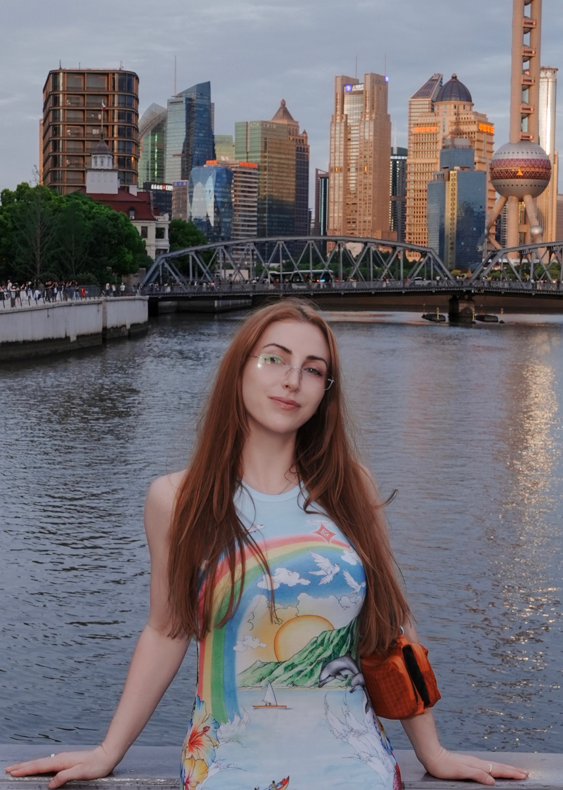

About

Arressai is the phoenetic spelling of Ruby Symphony Illuminating - a name given to me after a rite of passage at 14 which deeply affected my relationship to nature. Nature has become the lens through which I view the world and the nuances of sound as a form of multi-faceted communication.
My practice explores deep listening and the unseen that shapes our perception.
Through installations, compositions, and immersive experiences, I explore "casual coherence" as an oblique approach to unity in the contemplation of natural laws and unseen levers.
FOCUS
Sonic phenomena, material resonance, spatial audio
MEDIUM
Sound, electronics, sculptural forms, glass, noble gasses
METHOD
Installation, composition, field recording, transduction of sound through material
INTENT
Organization through sonic principles, unity practice on individual level and amongst disparate stakeholders
APPROACH
sound based practice, systems thinking, embodied listening
New York, NY
MA Interactive Media Art
Tisch NYU, New York
BA (Honors) Music Production and Performance
University of St. Mark and St. Johns, Berlin
AA Visual Communications
FIDM, Los Angeles
Sound Art, Installation, Sculpture, Performance
IMA Low Residency (MA) New York
2026
ADMS 2x Returning Keynote Speaker
2024 & 2025